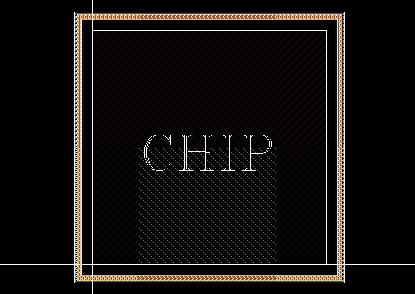

DESCRIPTION :
'SEALRING' is a Pcell Generator that will create the proper process variant
sealring needed. The xsize and ysize can be modified and the white
space for x and y can be adjusted.
ATTRIBUTES:
-
Variant: Only ca18hr is available at this time
-
X size: Width of area in X direction.
-
Y size: Width of area in Y direction.
-
Whitespace in X: Space between chip data and Sealring in the X direction.
-
Whitespace in Y: Space between chip data and Sealring in the Y direction.
NOTES:
The 'SEALRING' should be placed at the lowerleft coordinate of your chip
for proper placement. This is the first release for CA18HR.

DRC: